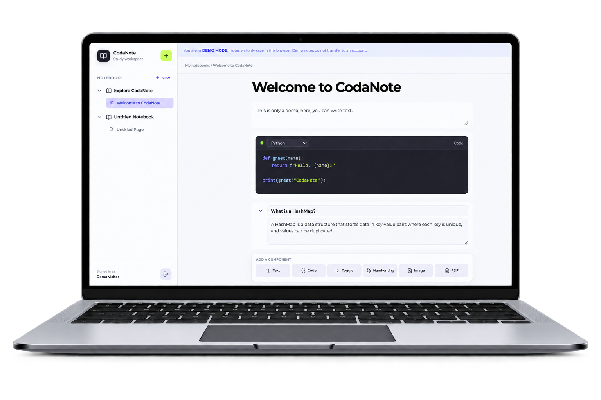
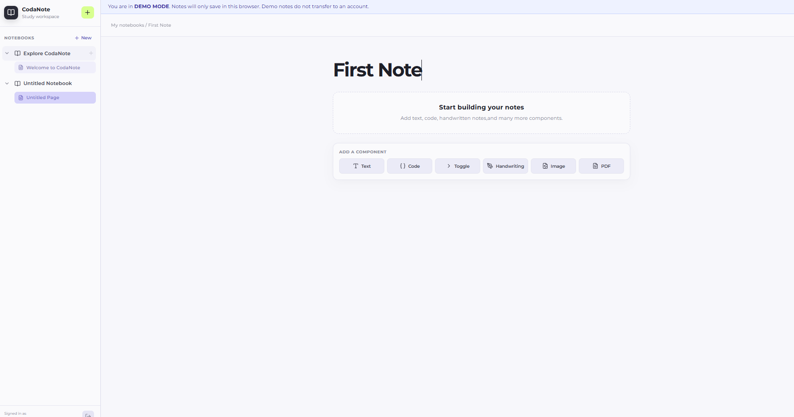
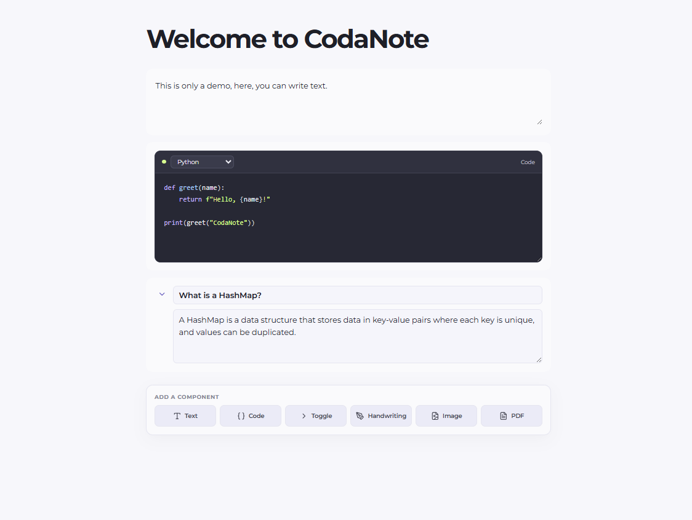

MEMBERS
Courtney Songco
ROLE
Full-stack Developer
UI/UX Design
CodaNote is a note-taking platform designed specifically for computer science and engineering students who often need more than traditional text-based notes. Technical courses frequently require students to work with a combination of written explanations, programming code, diagrams, PDFs, images, and practice questions, which can make it difficult to keep everything organized within a single application. CodaNote brings these different forms of note-taking into one workspace. Students can organize notebooks and pages while adding typed notes, syntax-highlighted code blocks, handwriting, images, PDFs, and collapsible question-and-answer sections.
The purpose of CodaNote is to create a more unified note-taking experience for computer science and engineering students. Technical students often need to switch between several applications while studying. A student might use one application for lecture notes, another to view or write code, another for PDFs, and another for handwritten diagrams. CodaNote was designed to reduce this fragmentation by bringing these workflows together within one structured workspace.
Technical Students Need More Than Traditional Notes Computer science and engineering students often work with several different types of information within the same lecture or study session. They may need to write explanations, save programming examples, draw diagrams, reference PDFs, and create questions for later review. Most general-purpose note-taking applications are not specifically designed around this mixed-media technical workflow. Code is Often Treated Like Regular Text Programming students frequently need to place code examples directly beside written explanations. In many traditional note-taking applications, programming code is treated as normal text. This can make code harder to distinguish, read, and review. CodaNote addresses this problem by treating code as its own type of content with programming-language selection and syntax highlighting. Constantly Switching Between Applications Students may use one application for handwritten notes, another for programming, another for PDFs, and another for study questions. Constantly moving between different applications can interrupt the study workflow and make course materials harder to organize. Existing Note-Taking Applications Have Different Limitations Goodnotes provides a strong handwriting and PDF annotation experience, but its workflow is primarily centered around traditional handwritten notes and documents. For programming students, there is no dedicated code-block experience designed around language-specific syntax highlighting. Microsoft OneNote provides a flexible note-taking environment, but its infinite canvas can become cumbersome for students who prefer their notes to follow a structured vertical layout. OneNote also does not focus its experience around dedicated programming blocks with syntax highlighting.
CodaNote is primarily designed for computer science, software engineering, computer engineering, and other engineering students. Computer Science Students Computer science students frequently need to combine programming examples with lecture explanations, algorithms, diagrams, and study material. CodaNote allows code and traditional notes to exist within the same page instead of requiring students to move between a note-taking application and a separate code editor. Software Engineering Students Software engineering students often work with technical documentation, architecture diagrams, programming examples, development concepts, and written notes. A flexible component-based note system allows these different forms of information to remain organized within a single notebook. Computer Engineering Students Computer engineering students may need to combine code, diagrams, hardware concepts, mathematical explanations, PDFs, and handwritten notes. CodaNote supports these different content formats while keeping the overall page structured. Engineering Students Other engineering students can also benefit from a note-taking system that supports diagrams, handwriting, technical documents, images, and traditional written notes. CodaNote is especially useful for students who prefer a structured notebook while still needing several ways to represent technical information.
The project began by identifying limitations me and other fellow Computer Science students have experienced when using existing note-taking applications. Surveying students from the University of California-Riverside, 90% of students wished to combined the features such as: Handwritten Notes and Markdowns for their code snippets Competitive Research I compared the CodaNote concept with established note-taking applications such as Goodnotes and Microsoft OneNote. This helped identify opportunities around programming support, structured page layouts, mixed-media notes, and technical student workflows. Information Architecture I designed CodaNote around a similar structure inspired by Notion's block features and how OneNote UI is set up:


Strengths
CodaNote's main strength is its specialization toward
computer science and engineering students.
Most free notetaking apps lack the feature of combining handwritten canvases and actual
markdowns for code snippets where CodaNote has provided.
Unlike general-purpose note-taking applications, CodaNote provides dedicated code blocks with syntax highlighting
and support for multiple programming languages.
The platform also combines traditional typed notes,
handwriting, code, images, PDFs, and collapsible study
questions within the same workspace.
Weaknesses
As a newer platform, CodaNote does not have the same level of development resources compared to
established applications such as Goodnotes and OneNote.
Features such as real-time collaboration and cross-platform synchronization is currently being developed.
Opportunities
CodaNote has the opportunity to expand beyond traditional note-taking into a more specialized technical learning
environment.
Future features could include executable code blocks, implementing LaTex blocks,
Markdown support, additional programming languages, and improved handwriting
support.
Threats
Established note-taking applications such as Goodnotes and
Microsoft OneNote already have large user bases and
significantly greater development resources.
These companies could eventually introduce stronger
programming-focused note-taking features.
Students may also prefer to continue using several
specialized applications that are already part of their
existing workflow.
CodaNote is designed for a more structured note-taking environment for computer science and engineering students. The final experience combines the familiarity of notebooks and pages with a flexible component-based editor. Students can move between writing traditional notes, adding programming examples, drawing diagrams, uploading PDFs or images, and creating collapsible study questions all in one app. Combining Markdowns for Code Snippets and Actual Handwriting Canvas One of the most important solutions was treating code as a first-class type of note and adding an actual handwriting features which most popular note-taking apps have not implemented yet. A More Structured Workspace CodaNote uses a structured vertical layout instead to give students an easier way to add components and navigate through their notes. Students can simply add and delete blocks.